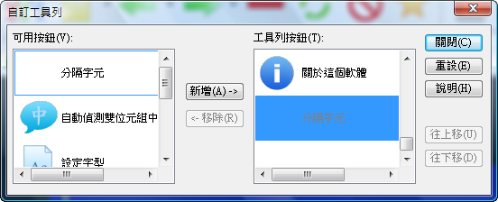
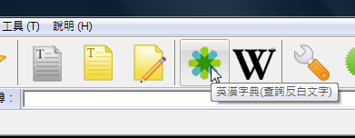
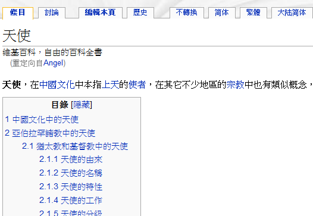
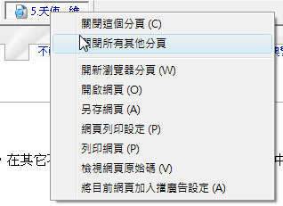
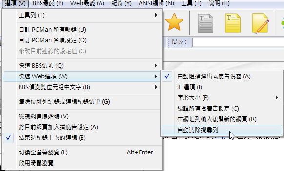
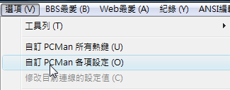

基本資訊
| 釋出日期： | 2009/03/00 |
| 開發日期： | 2009/02 |
| 釋出者： | ceshine |
加大工具列圖示
加大並更換工具列圖示，讓PCMan各種快捷功能的使用更加順手
提醒您，可以在工具列上點右鍵自定工具列
可自訂想要出現於工具列上的圖示

百科、字典快速查詢
9.2.2版在工具列上新增了快速查詢百科與英漢字典的功能，節省您另外開啟網頁的時間：
首先用左見拖曳反白想要查詢的文字
接著直接點擊工具列上的百科或字典圖示

如是英漢字典，就會開啟n詞酷網頁

百科的話就會開啟維基百科網頁

一次關閉大量分頁 (Combo)
9.2.2版中，Combo版推出了快速關閉大量分頁的功能。
首先在想要保留的分業上點選右鍵，選擇「關閉所有其他分頁」

之後PCMan就會除了該分頁外的所有分頁關閉
搜尋列自動清除(Combo)
在Combo版裡獨有的搜尋列，提供使用者是否要在每一次搜尋後自動清除搜尋文字的功能
設定方法有兩種
第一種是在「快速Web選項」裡點選「自動清除搜尋列」

第二種是在「自訂PCMan各項設定」中

選擇「Web選項」裡的「自動清除搜尋列」